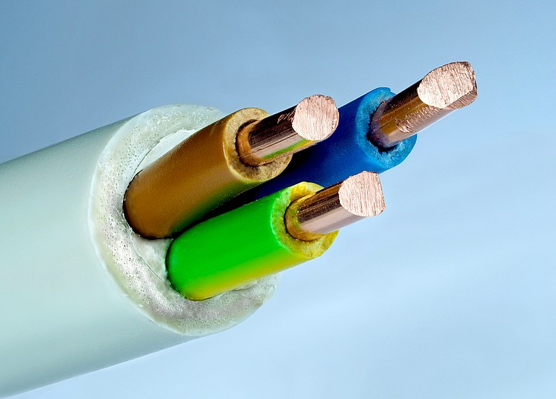
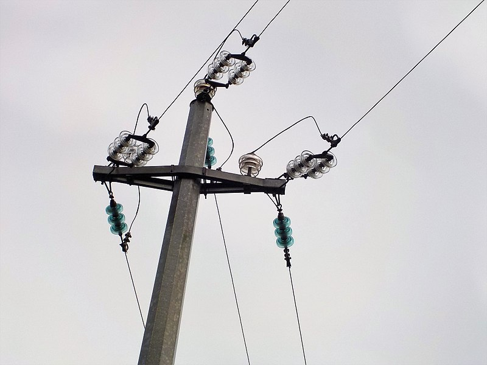
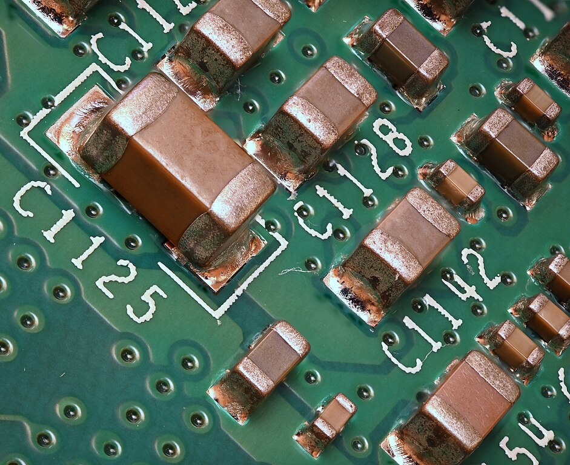
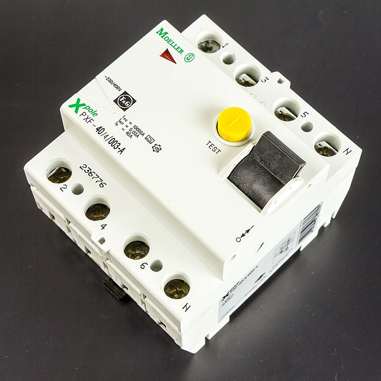

El circuito eléctrico¶
{kind=link}
Un circuito eléctrico es un conjunto de componentes que generan y controlan el paso de la electricidad para producir efectos útiles.
Un ejemplo sencillo de circuito eléctrico es el que todos utilizamos al encender la luz de una habitación.
Los circuitos están formados por cuatro tipos de componentes: los generadores, conductores, receptores y elementos de control. A continuación se estudiarán con más detalle.
Generadores¶
Estos componentes son los encargados de generar corriente eléctrica. Para conseguirlo impulsan a los electrones para que circulen por el circuito.
Ejemplos de generadores son las pilas y baterías, las dinamos de las bicicletas, los alternadores de los automóviles o las placas solares fotovoltaicas.
{kind=link}
{kind=link}
{kind=link}
Panel fotovoltaico de generación eléctrica solar.¶
Conductores¶
Los conductores transportan la electricidad entre los componentes del circuito. Suelen ser cables eléctricos.
Los materiales más comunes utilizados para conducir electricidad son:
- Cobre:
Es el más utilizado en el interior de los edificios, en los cables flexibles de los aparatos y para la fabricación de motores eléctricos.
Cable de cobre, de 3 hilos únicos de 2.5mm de diámetro cada uno.¶
Petar Milošević, CC BY-SA 4.0, via Wikimedia Commons.- Aluminio y acero:
Son los materiales más utilizados en los cables de alta tensión. Tienen buena resistencia mecánica, resisten bien a la oxidación y son más baratos que el cobre.
Cable de alta tensión, de aluminio y acero.¶
Albarubescens, CC BY-SA 4.0, via Wikimedia Commons.- Oro, níquel y cromo:
Se utilizan en el recubrimiento de los contactos eléctricos para evitar la oxidación y mejorar la conducción. Se pueden ver en las clavijas de audio y los conectores USB.
- Estaño, plomo y plata:
Por su baja temperatura de fusión (menor de 300ºC) se utilizan en la soldadura de componentes electrónicos. La plata, a pesar de ser más cara, se utiliza cada vez más porque no produce los efectos tóxicos del plomo.
Componentes SMD unidos a la PCB con soldaduras de estaño-plomo.¶
Phiarc, CC BY-SA 4.0, via Wikimedia Commons.
{kind=link}
{kind=link}
{kind=link}
{kind=link}
Receptores¶
Los componentes receptores transforman la electricidad en efectos útiles como luz, calor, movimiento, sonido, etc.
Algunos ejemplos de receptores son las bombillas, ventiladores, horno microondas, frigorífico, televisor, etc.
{kind=link}
Lámpara led. Produce luz a partir de la electricidad.¶
{kind=link}
Resistencia eléctrica de una vitrocerámica, produciendo calor.¶
Elementos de control¶
Estos elementos permiten controlar el paso de la electricidad según convenga. El ejemplo más sencillo es un interruptor que enciende o apaga la luz dejando pasar la electricidad cuando nos conviene.
Dependiendo de cómo se accionen hay varios tipos de elementos de control.
- Accionamiento manual:
Interruptores, pulsadores, mandos giratorios, etc. Permiten a las personas controlar los aparatos eléctricos.
Cada elemento de control manual tiene su aplicación práctica. A la hora de controlar un timbre no se puede utilizar un interruptor porque después de pulsarle, el timbre funcionará sin parar. En esta aplicación usaremos mejor un pulsador, que solo acciona el timbre mientras lo estemos pulsando.
- Protección eléctrica:
Fusibles, interruptores automáticos, diferenciales, etc.
Los fusibles y los interruptores automáticos cortan la electricidad para proteger la instalación eléctrica y evitar que se quemen los cables si hay un cortocircuito o una sobrecarga.
El diferencial nos protege la vida cortando la corriente antes de que una derivación eléctrica pueda electrocutarnos.
Interruptor diferencial. Protege a las personas de descargas eléctricas.¶
Raimond Spekking, CC BY-SA 4.0, via Wikimedia Commons.- Accionamiento automático:
Algunos elementos de control se accionan a partir de señales eléctricas. Esto permite un control automático, ahorrando la intervención de una persona.
Ejemplos de accionamientos automáticos son: la luz de una escalera que se apaga sola al cabo de un tiempo, una puerta eléctrica que se abre sola al detectar presencia, un ascensor que se detiene en el piso correcto gracias a un final de carrera, un edificio inteligente que controla mediante ordenador la temperatura, humedad, apertura de persianas, riego, etc.
{kind=link}
{kind=link}
{kind=link}